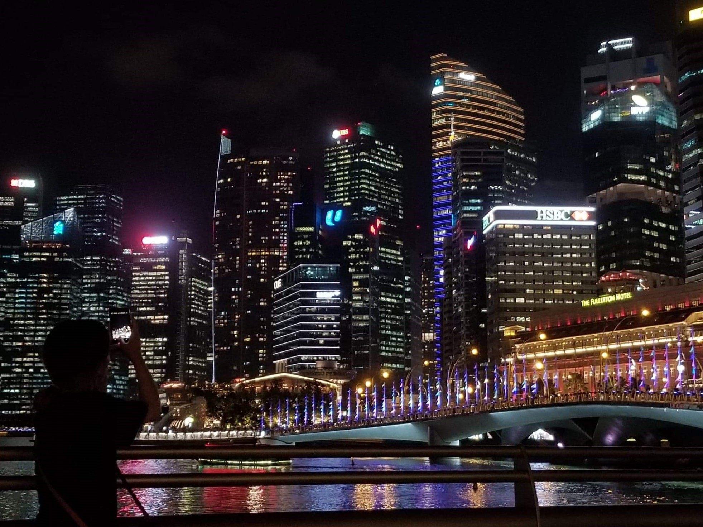

저를 소개합니다

팀원 신주연
"멋사에서 벗들과 함께 열심히 배우고,즐거운 경험도 많이 하고 싶어요. 잘 부탁드립니다 :D"
귀여운 걸 좋아해서 최근엔 니니즈 캐릭터인 조르디에 빠져있다.
전공은 심리학이지만 디자인과 코딩이 관심 분야다.
멋쟁이사자처럼에서 코딩을 배우며 적성을 찾아가는 중.
최근엔 UI 디자인에 흥미가 생겼다.

코로나가 사라지면 하고 싶은 일
교환학생을 하며 좋은 추억을 쌓고 온
싱가포르에 다시 다녀오고 싶어요!
교환학생 하면서 만난 현지 친구들도 보고 싶고,
자연과 도시가 공존하는 싱가포르 풍경이 그립네요 ʘ̥_ʘ̥